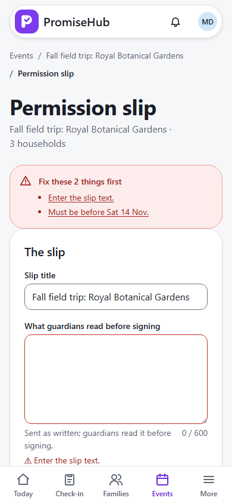
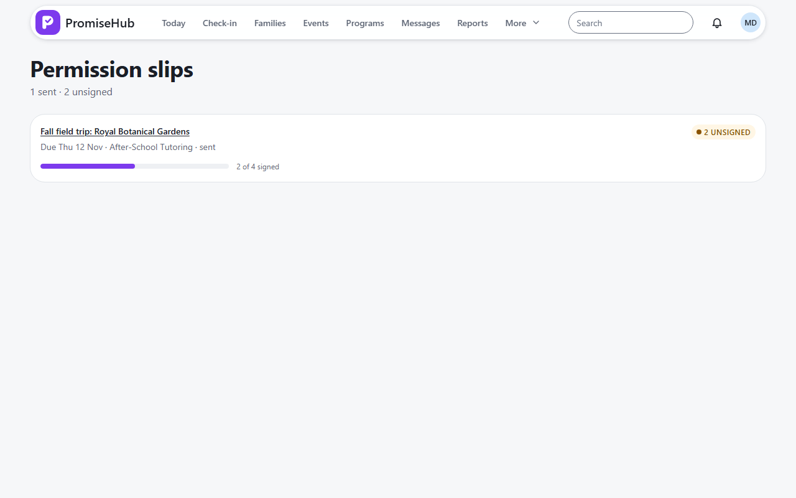

PromiseHub · Video 11
Send permission slips
Write once, send to every family, watch the answers come in
Write once, send to every family, watch the answers come in
Then tracking: 0 of 4 signed.
Version 2: everyone signs again.


| Case | Answer |
|---|---|
| Send now / schedule / cancel / send now | Sent, scheduled, draft, sent |
| Material edit | Version 2, answers superseded, families told |
| At the SMS cap | Email instead, households named |
| Volunteer coordinator | Reads; 403 to send |
| Another organization / Slips off | 404; scheduled slip not sent |
Next: guardians sign on their phones